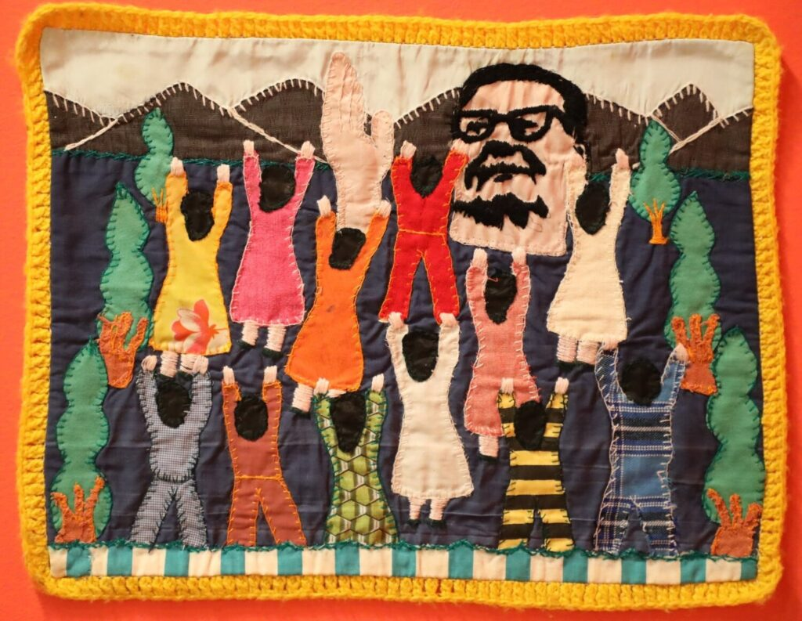
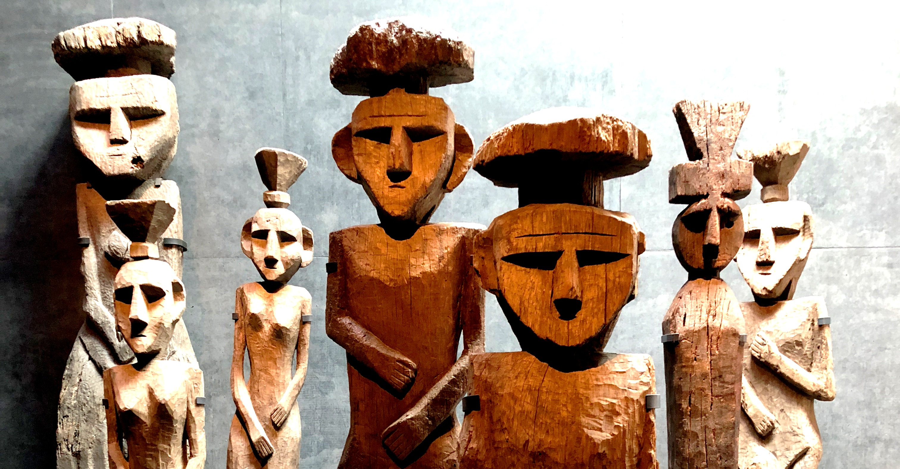

Arte e Literatura



O Chile tem uma forte tradição artística, especialmente na literatura, sendo reconhecido mundialmente por seus poetas. Um dos maiores nomes é Pablo Neruda, cuja obra ganhou destaque internacional e contribuiu para a valorização da cultura latino-americana. Sua poesia aborda temas como amor, política e natureza
Além da literatura, as artes visuais também têm grande importância no país, com murais, pinturas e expressões urbanas presentes em várias cidades. Museus e centros culturais ajudam a preservar e divulgar essa produção artística, mostrando como a arte é uma parte essencial da identidade chilena.